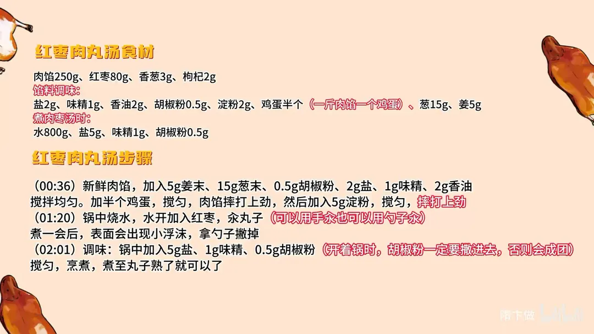

红枣肉丸汤
隋卞一做。250g 肉馅配 15g 葱末、5g 姜末，加半个鸡蛋摔打上劲，再拌淀粉二次摔打，丸子才抱团不散。水开后下 80g 红枣，边汆边撇沫，最后用 5g 盐、1g 味精、0.5g 胡椒粉调味。
原视频：https://www.bilibili.com/video/BV1QVyrYnEzN
食材
肉馅、红枣、香葱 等 16 样
| 类别 | 用料 | 用量 |
|---|---|---|
| 主料 | 肉馅 | 250g |
| 主料 | 红枣 | 80g |
| 主料 | 香葱 | 3g |
| 主料 | 枸杞 | 2g |
| 馅料调味 | 盐 | 2g |
| 馅料调味 | 味精 | 1g |
| 馅料调味 | 香油 | 2g |
| 馅料调味 | 胡椒粉 | 0.5g |
| 馅料调味 | 淀粉 | 2g |
| 馅料调味 | 鸡蛋 | 半个（一斤肉馅一个鸡蛋） |
| 馅料调味 | 葱 | 15g |
| 馅料调味 | 姜 | 5g |
| 煮汤调味 | 水 | 800g |
| 煮汤调味 | 盐 | 5g |
| 煮汤调味 | 味精 | 1g |
| 煮汤调味 | 胡椒粉 | 0.5g |
步骤
- 拌馅：新鲜肉馅里加 5g 姜末、15g 葱末、0.5g 胡椒粉、2g 盐、1g 味精、2g 香油，搅拌均匀。
- 打上劲：打入半个鸡蛋搅匀，把肉馅摔打上劲，再加入 5g 淀粉搅匀，继续摔打上劲，直到肉馅黏稠抱团。
- 汆丸子：锅中烧水，水开后放入 80g 红枣，用手或勺子把肉馅汆成丸子下锅。
- 撇沫：煮一会儿表面会浮出小沫子，用勺子撇掉，汤才清。
- 调味：锅中加 5g 盐、1g 味精、0.5g 胡椒粉，胡椒粉要在开着锅时撒进去并搅匀，否则会结成团。
- 煮制出锅：继续煮到丸子熟透，出锅前撒 3g 香葱、2g 枸杞即可。
小贴士
- 丸子用手汆或勺子汆都行，肉馅摔打到上劲是丸子不散的关键。
- 卡片食材表里淀粉写 2g，步骤里写 5g，量小差别不大，以肉馅能抱团为准。
讲解要点
难度：★★☆☆☆（新手可做，难点是肉馅摔打上劲，打不到位丸子下锅就散）
为什么这么做
- 肉馅必须新鲜：这道汤调料极少，鲜味全靠猪肉本身，肉不新鲜就只剩调料味。
- 先拌葱姜、盐、味精、胡椒粉、香油：先把底味打进肉里，再靠摔打把味道和黏性揉到一起。
- 半斤肉馅加半个鸡蛋（一斤一个）：鸡蛋让丸子搓完之后松软，不会死硬。
- 摔打上劲：反复摔打能让肉馅出胶、变黏稠，丸子才抱团，入口才有弹性。
- 淀粉只放一点点：淀粉锁水、帮忙抱团，放多了丸子发硬发黏。
- 红枣先下锅同煮：枣的甜香先煮进汤里，比整颗囫囵煮香味更浓。
- 撇浮沫：沫子撇干净，汤才清。
- 胡椒粉开锅时用带眼的瓶抖着撒：一勺倒进去就结成疙瘩，散不开。
容易翻车
- 肉馅不新鲜或太瘦，丸子又柴又没肉香。
- 摔打不到位，丸子下锅就散，汤也浑了。
- 胡椒粉直接舀一勺下锅，结成一团。
- 丸子煮过头，松软变成发硬。
- 红枣放太少，汤里只有肉味，枣香出不来。
原片尾卡

原片文案
AI 字幕校准稿
天又冷了，现在做的菜就该往「补」的上面靠。今天给你们一个绝对想不到还可以这样搭配的，但是在山西吃完之后非常好吃，小李回来缠着我给他做红枣肉丸汤。
猪肉是真新鲜，特别特别淡的那一点点盐味，就把猪肉的香味提出来了，证明肉真好。所以一定要买新鲜的肉馅，因为我们调料非常简单：姜米、葱末、胡椒粉、盐、味精、香油。
这是半斤肉馅，加半个鸡蛋就够了，一斤肉馅加一个鸡蛋。加鸡蛋可以使丸子搓完之后松软。摔打上劲，上去之后里边放一点淀粉，淀粉还是要放的，但是非常少。
好了，我们把枣倒进去，然后就可以汆丸子了。汆丸子用勺也行、用手也行，我习惯用手。那会儿汆得比较快，一斤肉馅也就汆最多一分钟。
这个时候会出现一点小的浮沫，拿勺子撇一下就行了。调味还是这老哥仨：盐、味精、胡椒粉。大家用胡椒粉调味一定要注意，开着锅放的时候一定是拿这种带眼的瓶来抖，你要放一勺就成疙瘩汤了。
这需要煮一会儿。什么程度算好？尝一个，尝熟了就可以了。枣和肉汤的味已经很融合了，丸子也松软了就可以了，然后上面来点小葱花点缀上菜。
这么煮出来，就比整个的煮枣香味会浓一点，而且汤里边有枣的那种香甜的味道。这个味道很难给大家说：肉丸的鲜味是在的，红枣的甜和香也是在的，平时想不到的两种搭配，其实他俩放在一起特别搭。
这个菜也简单，适合冬天，而且也挺补的。关键就是你把肉馅选好、把枣选好，搁几块煮，汤里边有枣味了、有肉味了，丸子煮熟、煮软、煮松的就行了，就这么简单。愿意吃辣的还可以加点辣的，大家试一下。
冬天热热乎乎的，全家人围坐在桌子前，一人来一碗，非常和谐。